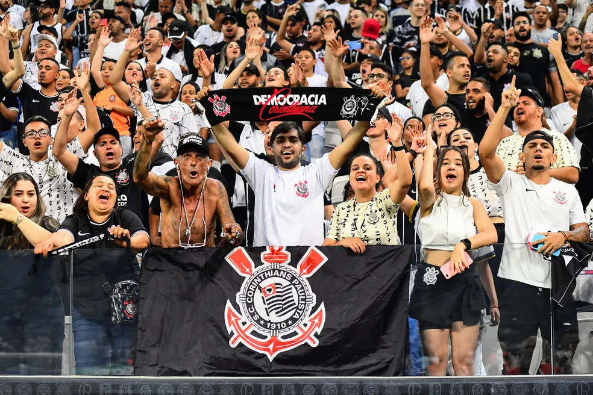

Em 1 de setembro de 1910, um grupo de cinco operários (Joaquim Ambrósio, Antônio Pereira, Rafael Perrone, Anselmo Correa e Carlos Silva) do bairro paulistano Bom Retiro, sob a luz de um lampião, às oito e meia da noite, decidiram criar um novo time de futebol, além de mais oito pessoas que contribuíram com 20 mil réis e também foram considerados sócios-fundadores. A ideia surgiu depois de assistirem à atuação do Corinthian FC, equipe inglesa de futebol fundada em 1882, que excursionava pelo Brasil. Os ingleses eram chamados pela imprensa da época de "Corinthian's Team", mas o time brasileiro só seria batizado "Sport Club Corinthians Paulista" depois de muita discussão e algumas reuniões. O presidente escolhido por eles foi o alfaiate Miguel Battaglia, que já no primeiro momento afirmou, "O Corinthians vai ser o time do povo e o povo é quem vai fazer o time". Da primeira arrecadação de recursos à compra da primeira bola de futebol do clube pouco tempo se passou, na verdade, apenas uma semana. Um terreno alugado na Rua José Paulino foi aplainado e virou campo, e foi lá que, já no dia 14 de setembro, o primeiro treino foi realizado diante de uma plateia entusiasmada que garantiu: "Este veio para ficar". De partida em partida o time foi se tornando famoso, mas era ainda um time de várzea.
Títulos
O Sport Clube Corinthians Paulista vem conquistando uma série de títulos na última decada. Entre eles temos a vasta lista:
A temporada 2011 começou com uma eliminação precoce na Copa Libertadores da América, mas o clube se recuperou com um vice-campeonato no Campeonato Paulista e sua quinta conquista no Campeonato Brasileiro de 2011.
Com a manutenção do elenco base do título nacional, o Corinthians fez uma das mais importantes temporadas de sua história, ao se sagrar pela primeira vez campeão da Copa Libertadores - e de maneira invicta, vencendo o Boca Juniors na final - e do Campeonato Mundial de Clubes da FIFA pela segunda vez, com uma vitória contra o campeão europeu Chelsea, com um gol de Paolo Guerrero. Reveja os melhores momento deste jogo:
Torcida

A torcida do Corinthians é chamada carinhosamente de "Fiel". De acordo com uma série de institutos de pesquisas, como Ibope e Datafolha, além da Revista Placar, o Timão possui entre 27 e 33 milhões de torcedores(as) espalhados(as) pelo país, levando-se em conta, nas dadas pesquisas, brasileiros a partir de 10 ou 16 anos de idade, tendo a segunda maior torcida no Brasil, atrás nacionalmente somente do Flamengo. Todavia, pesquisas de abrangência nacional mais recentes apontam um forte crescimento da torcida corintiana nos últimos anos, reduzindo a distância em relação aos rubro-negros cariocas. Pelos dados do Datafolha, em 2014, que considera torcedores(as) a partir de 16 anos de idade (em um universo de 202,9 milhões de brasileiros), são 28,4 milhões de corintianos em todo o Brasil, sendo que na faixa de renda familiar mensal superior a 10 salários mínimos, o Corinthians lidera com 17,6% dos brasileiros(as), bem acima do Flamengo que possui 10,9% nesta faixa e o São Paulo que possui 9,2% da população mais rica. O crescimento alvinegro é percebido ao comparar a última pesquisa do Ibope, em 2010, que levava em conta torcedores com 10 anos ou mais e estimava 21,7 milhões de alvinegros espalhados pelo país.


 Marcelinho Carioca
Marcelinho Carioca Chicão
Chicão